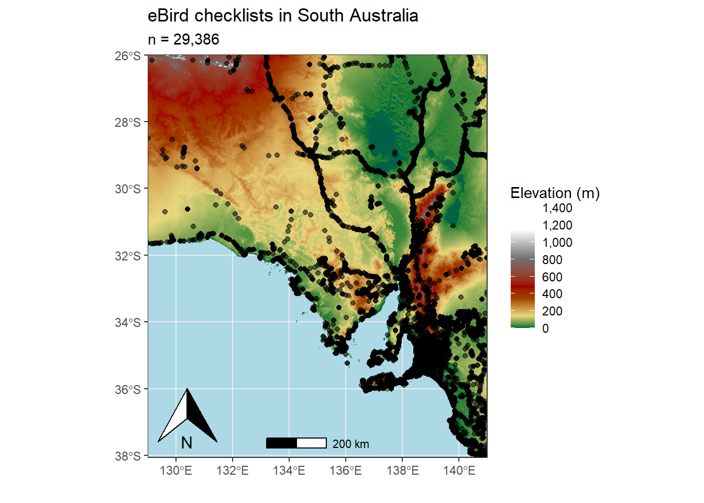
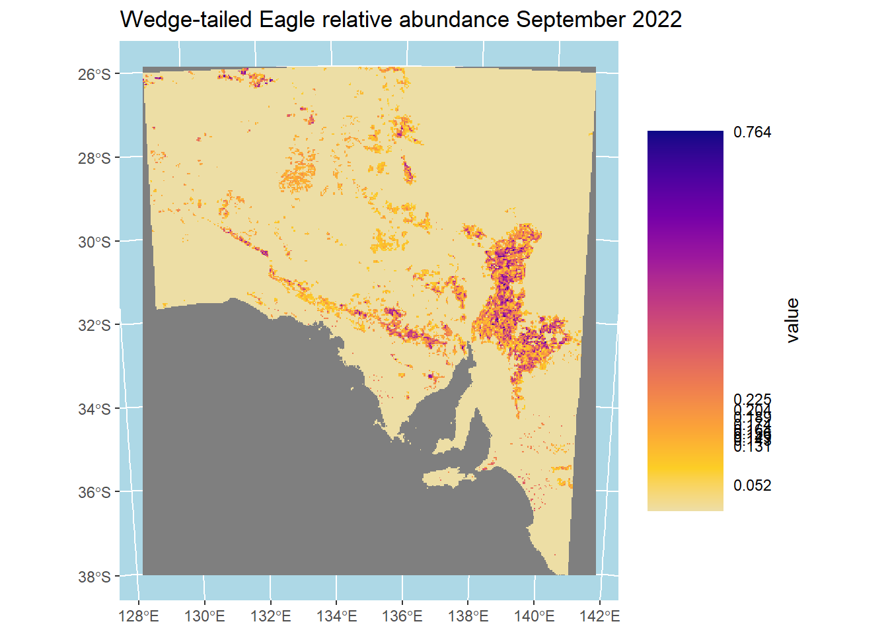

library(tidyverse) #tidy data/wrangling
library(auk) #eBird data wrangling
library(ebirdst) #spatiotemporal subsampling
library(mccf1) # modelling
library(ranger) #modelling
library(scam) #modelling
library(sf) #spatial data operations
library(terra) #raster data operations
library(tidyterra) #raster plotting
library(scales) # pretty scales
library(paletteer) # colours for plottingThroughout the time that I’ve been undertaking my PhD I’ve gained skills in data science and statistical programming, particularly with the language R. I started learning R during my Honours year, but have been able to hone my skills during the PhD in terms of the complexity and scope of use. Although daunting at times, learning to code has been the most enjoyable part of my PhD and something that I look forward to hopefully doing as part of a job sometime in the future!
In this article I’m going to estimate the relative abundance of the Wedge-tailed Eagle in South Australia during the breeding season using data from the community science platform, eBird. This platform boasts a staggering 1.3 billion records of birds across the globe, and is an invaluable conservation resource to study bird populations and how they change across time and space. I decided on the Wedge-tailed Eagle, because as a birder that specifically studies raptors, you can’t get much cooler than an Eagle!
This analysis largely follows the work of Matt Strimas-Mackey and the wonderful work that he and the eBird team at Cornell University in America put together in the form of a best practices guide when working with eBird data. This has been an extremely helpful resource throughout my PhD and I couldn’t have done a few of my chapters without it! Here is a link to the resource: https://ebird.github.io/ebird-best-practices/
Enough chit chat, lets get to the analysis!
First up, lets load the packages and data required for the analysis.
# set random number seed to ensure fully repeatable results
set.seed(1)
# habitat variables: landcover and elevation
habitat <- read_csv(here::here("data/WTE_Analysis/WTE_environmental-variables_checklists.csv"))
# zero-filled ebird data combined with habitat data
checklists <- read_csv(here::here("data/WTE_Analysis/eBird_WedgeTailedEagle_zf_SA.csv")) %>%
inner_join(habitat, by = "checklist_id") %>%
#subset to breeding season months
dplyr::mutate(month = month(observation_date)) %>%
dplyr::filter(month %in% c(6, 7, 8, 9, 10, 11, 12))
checklists# A tibble: 29,386 × 52
checklist_id observer_id scientific_name observation_count species_observed
<chr> <chr> <chr> <dbl> <lgl>
1 S64372429 obs1458647 Aquila audax 0 FALSE
2 S61315220 obs1458647 Aquila audax 0 FALSE
3 S61317706 obs1458647 Aquila audax 0 FALSE
4 S61694299 obs1458647 Aquila audax 0 FALSE
5 S61784799 obs1458647 Aquila audax 0 FALSE
6 S71743238 obs162908 Aquila audax 0 FALSE
7 S145166100 obs107603 Aquila audax 0 FALSE
8 S145839592 obs107603 Aquila audax 0 FALSE
9 S145839867 obs107603 Aquila audax 0 FALSE
10 S63019801 obs107603 Aquila audax 0 FALSE
# ℹ 29,376 more rows
# ℹ 47 more variables: country <chr>, state <chr>, locality <chr>,
# locality_id <chr>, longitude <dbl>, latitude <dbl>, protocol_type <chr>,
# all_species_reported <lgl>, observation_date <date>, year <dbl>,
# day_of_year <dbl>, hours_of_day <dbl>, effort_hours <dbl>,
# effort_distance_km <dbl>, effort_speed_kmph <dbl>, number_observers <dbl>,
# elevation_mean <dbl>, elevation_sd <dbl>, ed_c00_water <dbl>, …# prediction grid
pred_grid <- read_csv(here::here("data/WTE_Analysis/WTE_environmental-variables_prediction-grid.csv"))
r <- rast(here::here("data/WTE_Analysis/WTE_prediction-grid.tif")) %>%
# this second rast() call removes all the values from the raster template
rast()
crs <- st_crs(r)Lets also load in a shapefile of South Australia so that we can make pretty looking maps of our predictions.
SA <- read_sf(here::here("data/WTE_Analysis/South_Australia.shp"))Data within community science programs are often subject to spatial and temporal biases. Australia represents a fantastic example of spatial sampling bias, as illustrated below by the figure. The majority of eBird checklists fall into coastal areas where people live, instead of being evenly distributed across the landscape. Checklists also follow things like roads, which is evident by the line of checklists spanning the Stuart Highway from mid-South Australia up to the Northern Territory. People are usually more available on weekends to contribute to community science projects, and there are studies that document this ‘Weekend effect’. To minimise these biases, we will perform spatiotemporal subsampling to the data by selecting a checklist for every week of the available data within a defined 3x3 km grid cell.
class : SpatRaster
dimensions : 1448, 1440, 1 (nrow, ncol, nlyr)
resolution : 0.008333333, 0.008333333 (x, y)
extent : 129, 141, -38.06667, -26 (xmin, xmax, ymin, ymax)
coord. ref. : lon/lat WGS 84 (EPSG:4326)
source : elevation_SA.tif
name : elevation_1KMmd_GMTEDmd
min value : -14.0
max value : 1358.5 
Before we subsample the data, we will split the data into a testing and training set. We will use 80% of the data to train the model, and the remaining 20% to test it.
checklists <- checklists %>%
mutate(type = if_else(runif(nrow(.)) <= 0.8, "train", "test"))
table(checklists$type) / nrow(checklists)
test train
0.2010141 0.7989859 Now we subsample the data.
# sample one checklist per 3km x 3km x 1 week grid for each year
# sample detection/non-detection independently
checklists_ss <- grid_sample_stratified(checklists,
obs_column = "species_observed",
sample_by = "type")We will hold the training data separate and select the predictors for the model.
checklists_train <- checklists_ss %>%
filter(type == "train") %>%
# select only the columns to be used in the model
select(species_observed, observation_count,
year, day_of_year, hours_of_day,
effort_hours, effort_distance_km, effort_speed_kmph,
number_observers,
starts_with("pland_"),
starts_with("ed_"),
starts_with("elevation_"))Now we are ready to model the data! We will use random forest models to achieve a prediction for the relative abundance of Wedge-tailed Eagles across Australia. The first model is a classification random forest that will achieve a measure of encounter rate, which is the probability of an eBirder encountering a species, in our case a Wedge-tailed Eagle, on a standard eBird checklist.
# calculate detection frequency for the balance random forest
detection_freq <- mean(checklists_train$species_observed)
# train a random forest model for encounter rate
train_er <- select(checklists_train, -observation_count)
er_model <- ranger(formula = as.factor(species_observed) ~ .,
data = train_er,
importance = "impurity",
probability = TRUE,
replace = TRUE,
sample.fraction = c(detection_freq, detection_freq))
# select the mcc-f1 optimizing occurrence threshold
obs_pred <- tibble(obs = as.integer(train_er$species_observed),
pred = er_model$predictions[, 2])
mcc_f1 <- mccf1(response = obs_pred$obs, predictor = obs_pred$pred)
mcc_f1_summary <- summary(mcc_f1) mccf1_metric best_threshold
0.3178958 0.6819302threshold <- mcc_f1_summary$best_threshold[1]
# calibration model
calibration_model <- scam(obs ~ s(pred, k = 6, bs = "mpi"),
gamma = 2,
data = obs_pred)dfasfa
# attach the predicted encounter rate based on out of bag samples
train_count <- checklists_train
train_count$pred_er <- er_model$predictions[, 2]
# subset to only observed or predicted detections
train_count <- train_count %>%
filter(!is.na(observation_count),
observation_count > 0 | pred_er > threshold) %>%
select(-species_observed, -pred_er)jhvjhv
predicted_er <- predict(er_model, data = train_count, type = "response")
predicted_er <- predicted_er$predictions[, 2]
train_count$predicted_er <- predicted_erfgchg
count_model <- ranger(formula = observation_count ~ .,
data = train_count,
importance = "impurity",
replace = TRUE)Assessment
# get the test set held out from training
checklists_test <- filter(checklists_ss, type == "test") %>%
mutate(species_observed = as.integer(species_observed)) %>%
filter(!is.na(observation_count))
# estimate encounter rate for test data
pred_er <- predict(er_model, data = checklists_test, type = "response")
# extract probability of detection
pred_er <- pred_er$predictions[, 2]
# convert to binary using the threshold
pred_binary <- as.integer(pred_er > threshold)
# calibrate
pred_calibrated <- predict(calibration_model,
newdata = data.frame(pred = pred_er),
type = "response") %>%
as.numeric()
# constrain probabilities to 0-1
pred_calibrated <- pmin(pmax(pred_calibrated, 0), 1)
# add predicted encounter rate required for count estimates
checklists_test$predicted_er <- pred_er
# estimate count
pred_count <- predict(count_model, data = checklists_test, type = "response")
pred_count <- pred_count$predictions
# relative abundance is the product of encounter rate and count
pred_abundance <- pred_calibrated * pred_count
# combine all estimates together
obs_pred_test <- data.frame(
id = seq_along(pred_abundance),
# actual detection/non-detection
obs_detection = as.integer(checklists_test$species_observed),
obs_count = checklists_test$observation_count,
# model estimates
pred_binary = pred_binary,
pred_er = pred_calibrated,
pred_count = pred_count,
pred_abundance = pred_abundance
)adsfdsfd
# subset to only those checklists where detection is predicted
detections_test <- filter(obs_pred_test, pred_binary > 0)
# count metrics
count_spearman <- cor(detections_test$pred_count,
detections_test$obs_count,
method = "spearman")
log_count_pearson <- cor(log(detections_test$pred_count + 1),
log(detections_test$obs_count + 1),
method = "pearson")
# abundance metrics
abundance_spearman <- cor(detections_test$pred_abundance,
detections_test$obs_count,
method = "spearman")
log_abundance_pearson <- cor(log(detections_test$pred_abundance + 1),
log(detections_test$obs_count + 1),
method = "pearson")
# combine metrics together
ppms <- tibble(
count_spearman = count_spearman,
log_count_pearson = log_count_pearson,
abundance_spearman = abundance_spearman,
log_abundance_pearson = log_abundance_pearson
)
knitr::kable(pivot_longer(ppms, everything()), digits = 3)| name | value |
|---|---|
| count_spearman | 0.283 |
| log_count_pearson | 0.268 |
| abundance_spearman | 0.285 |
| log_abundance_pearson | 0.311 |
Predictions
pred_grid_eff <- pred_grid %>%
mutate(observation_date = ymd("2022-09-15"),
year = year(observation_date),
day_of_year = yday(observation_date),
hours_of_day = 10.02,
effort_hours = 2,
effort_distance_km = 1,
effort_speed_kmph = 0.5,
number_observers = 1)
pred_grid_eff# A tibble: 109,160 × 41
cell_id x y elevation_mean elevation_sd ed_c00_water
<dbl> <dbl> <dbl> <dbl> <dbl> <dbl>
1 128 780490. 2662520. 570. 3.10 0
2 129 783490. 2662520. 566. 5.28 0
3 130 786490. 2662520. 556. 4.67 0
4 131 789490. 2662520. 553. 6.96 0
5 132 792490. 2662520. 554. 9.18 0
6 133 795490. 2662520. 552. 8.86 0
7 134 798490. 2662520. 547. 8.27 0
8 135 801490. 2662520. 544. 7.06 0
9 136 804490. 2662520. 551. 6.41 0
10 137 807490. 2662520. 553. 5.21 0
# ℹ 109,150 more rows
# ℹ 35 more variables: pland_c00_water <dbl>,
# ed_c01_evergreen_needleleaf <dbl>, pland_c01_evergreen_needleleaf <dbl>,
# ed_c02_evergreen_broadleaf <dbl>, pland_c02_evergreen_broadleaf <dbl>,
# ed_c04_deciduous_broadleaf <dbl>, pland_c04_deciduous_broadleaf <dbl>,
# ed_c05_mixed_forest <dbl>, pland_c05_mixed_forest <dbl>,
# ed_c06_closed_shrubland <dbl>, pland_c06_closed_shrubland <dbl>, …# encounter rate estimate
pred_er <- predict(er_model, data = pred_grid_eff, type = "response")
pred_er <- pred_er$predictions[, 2]
# binary prediction
pred_binary <- as.integer(pred_er > threshold)
# apply calibration
pred_er_cal <- predict(calibration_model,
data.frame(pred = pred_er),
type = "response") %>%
as.numeric()
# add predicted encounter rate required for count estimates
pred_grid_eff$predicted_er <- pred_er
# count estimate
pred_count <- predict(count_model, data = pred_grid_eff, type = "response")
pred_count <- pred_count$predictions
# add estimates to prediction grid
predictions <- bind_cols(pred_grid_eff,
in_range = pred_binary,
encounter_rate = pred_er_cal,
count = pred_count) %>%
select(cell_id, x, y, in_range, encounter_rate, count) %>%
mutate(encounter_rate = pmin(pmax(encounter_rate, 0), 1))
predictions# A tibble: 109,160 × 6
cell_id x y in_range encounter_rate count
<dbl> <dbl> <dbl> <int> <dbl> <dbl>
1 128 780490. 2662520. 0 0.207 0.657
2 129 783490. 2662520. 0 0.214 0.660
3 130 786490. 2662520. 0 0.210 0.662
4 131 789490. 2662520. 0 0.215 0.677
5 132 792490. 2662520. 0 0.235 0.675
6 133 795490. 2662520. 0 0.227 0.687
7 134 798490. 2662520. 0 0.221 0.714
8 135 801490. 2662520. 0 0.217 0.683
9 136 804490. 2662520. 0 0.215 0.654
10 137 807490. 2662520. 0 0.212 0.660
# ℹ 109,150 more rowskbkjk
r_pred <- predictions %>%
# estimate relative abundance
mutate(abundance = encounter_rate * count) %>%
# convert to spatial features
st_as_sf(coords = c("x", "y"), crs = crs) %>%
select(in_range, encounter_rate, count, abundance) %>%
# rasterize
rasterize(r, field = c("in_range", "encounter_rate", "count", "abundance"),
fun = "mean") %>%
setNames(c("in_range", "encounter_rate", "count", "abundance"))
# save the raster
# 3 bands: encounter_rate, count, and relative abundance
r_pred <- writeRaster(r_pred, here::here("results/abundance_WTE.tif"),
overwrite = TRUE,
gdal = "COMPRESS=DEFLATE")Mapping
# in range abundance
r_plot <- r_pred[["abundance"]] * r_pred[["in_range"]]
brks <- ifel(r_pred[["abundance"]] > 0, r_pred[["abundance"]], NA) |>
global(fun = quantile,
probs = seq(0, 1, 0.1), na.rm = TRUE) |>
as.numeric() |>
unique()
brks [1] 0.05234145 0.13082217 0.14332475 0.14900494 0.15581167 0.16441117
[7] 0.17449137 0.18947232 0.20413666 0.22506902 0.76427466# label the bottom, middle, and top value
lbls <- round(c(min(brks), median(brks), max(brks)), 2)
# ebird status and trends color palette
pal <- ebirdst_palettes(length(brks) - 1)
ggplot()+
geom_spatraster(data = r_plot, maxcell = Inf, alpha = 1)+
labs(title = "Wedge-tailed Eagle relative abundance September 2022") +
scale_fill_gradientn(colours = pal,
breaks = brks,
labels = round(brks, 3)) +
theme(panel.background = element_rect(fill = "lightblue"),
legend.title = element_text(angle = 90),
legend.title.align = 0.5,
legend.direction = "vertical")+
guides(fill=guide_colorbar(ticks.colour = NA,
barwidth = 3,
barheight = 15,
title.position = "right"))
lbls <- round(c(min(brks), median(brks), max(brks)), 2)
# ebird status and trends color palette
pal <- ebirdst_palettes(length(brks) - 1)
ggplot()+
geom_spatraster(data = r_plot, maxcell = Inf, alpha = 1)+
scale_fill_paletteer_c("viridis::magma", breaks = brks, labels = lbls)+
theme_bw()+
labs(title = "Wedge-tailed Eagle relative abundance September 2022")+
scale_fill_gradientn(colors = pal,
breaks = brks,
labels = lbls) +
theme(panel.background = element_rect(fill = "lightblue"),
legend.title = element_text(angle = 90),
legend.title.align = 0.5,
legend.direction = "vertical")+
guides(fill=guide_colorbar(ticks.colour = NA,
barwidth = 3,
barheight = 15,
title.position = "right"))